GLICD
Modifier les préférences de numérisation :
Simple-scan
Si besoin, se reporter au chapitre Scanner > Scanner avec l'application
Numériseur de documents (Simple-scan)
- Positionner le pointeur de la souris sur l'icône, comme sur l'image ci-dessous.
Simple clic > Icône
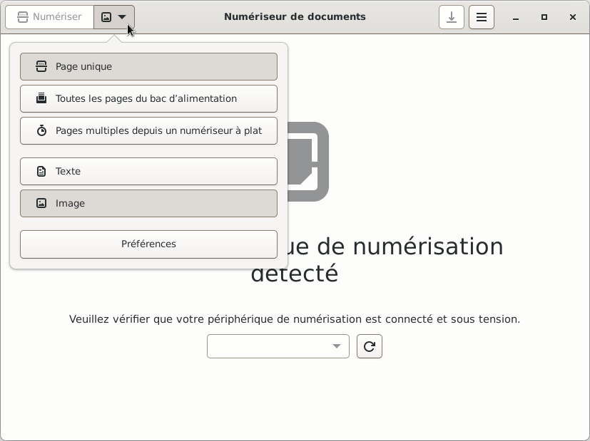
- Une liste déroulante s'ouvre, divisée en 3 catégories.
- Choix du nombre de pages : page unique ou toutes les pages du bac ou pages multiples
Suivant le choix, l'icône change dans l'onglet « Numériser »
- Si « Texte » sélectionné : numérisation en noir et blanc
Si « Image » sélectionné : numérisation en couleurs
- Préférences, configurer la numérisation, un simple clic > Préférences, une fenêtre s'ouvre.
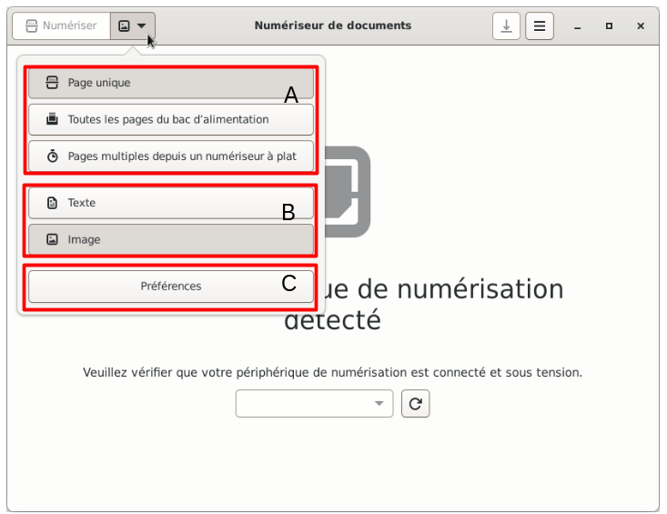
- Les sélections faites sont grisées, dans l'exemple ci-dessous :
« Toutes les pages du bac d'alimentation » seront numérisées
« Texte » est grisé donc numérisation en noir et blanc
Un simple clic sur les boutons suffit pour valider les choix, sauf pour « Préférences », une fenêtre va s'ouvrir.
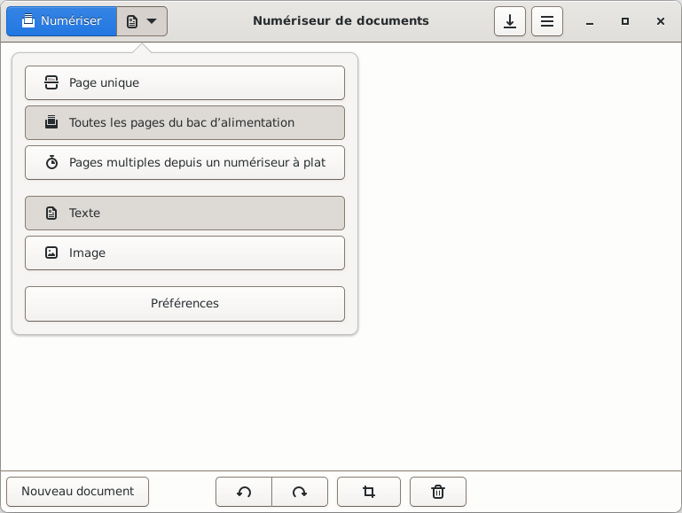
- Simple clic > Préférences
Une fenêtre s'ouvre
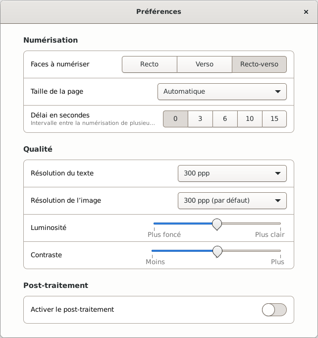
- Numérisation - Taille de la page
Simple clic > Automatique
Permet de faire un choix sur la taille de la page
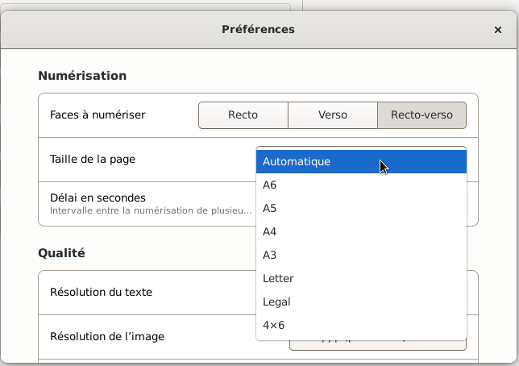
- Qualité - Résolution du texte
Simple clic dans la zone de sélection
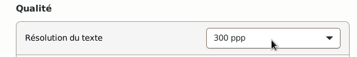
- Une liste déroulante apparaît
Celle-ci permet de faire un choix sur la résolution du texte
Simple clic sur le choix désiré, ici 300ppp
wikipedia/Point_par_pouce
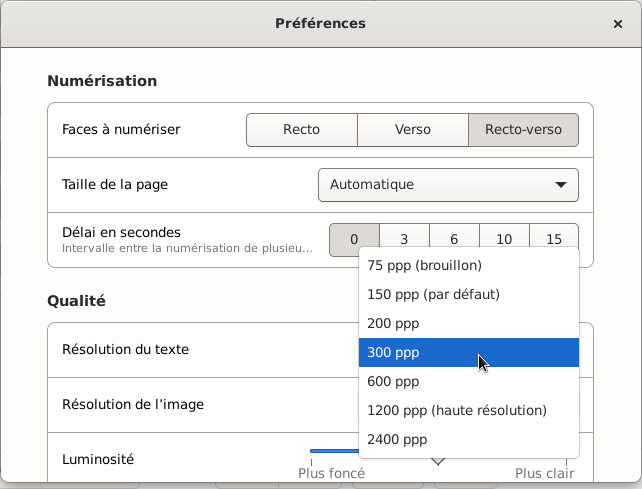
- Qualité - Résolution de l'image
Simple clic dans la zone de sélection
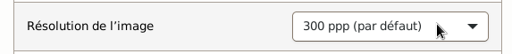
- Une liste déroulante apparaît
Celle-ci permet de faire un choix sur la résolution de l'image
Simple clic sur le choix désiré, ici 300ppp (par défaut)
wikipedia/Point_par_pouce
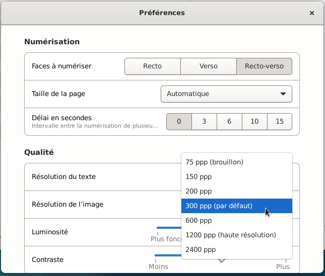
- Qualité - Luminosité
Positionner le pointeur de la souris sur le curseur
Maintenir appuyé
Déplacer la souris vers la gauche ou la droite pour plus ou moins de luminosité
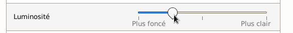
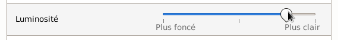
- Qualité - Contraste
Positionner le pointeur de la souris sur le curseur
Maintenir appuyé
Déplacer la souris vers la gauche ou la droite pour plus ou moins de contraste
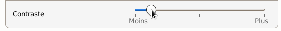
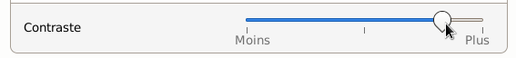
- Post-traitement, ne pas activer, non vu dans ce MEMO.
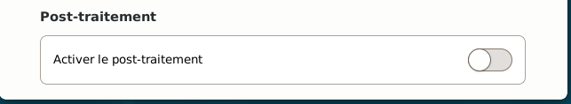
- Fermer la fenêtre des « Préférences »
Simple clic > Petite croix en haut à droite de cette fenêtre
- Quitter la liste déroulante
Simple clic à côté de celle-ci
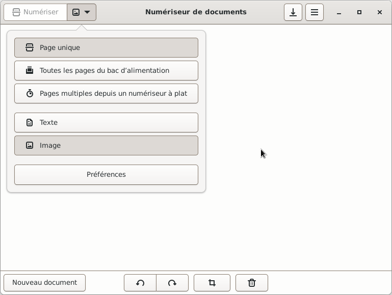
- Prêt à numériser
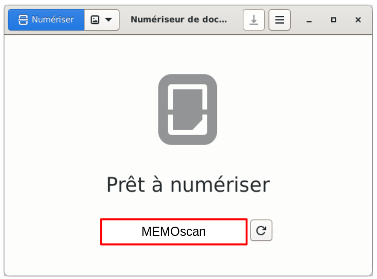
- Nota : Les modifications apportées dans
Préférences ont un impact sur la taille du fichier.
Si besoin, se rendre au chapitre Scanner > Scanner avec l'application
Numériseur de documents (Simple-scan)

Retour
Informations sur le logiciel libre et
Merci.
Marques déposées :
Ce site ne fait pas partie de Debian, n'est pas produit par le projet
Debian, ni approuvé par le projet Debian.
Ce site n'est pas affilié à Debian. Debian est une marque déposée appartenant
à Software in the Public Interest, Inc.
Contribuer :
Ce site ne fait pas partie de XFCE, n'est pas produit par le projet
XFCE, ni approuvé par le projet XFCE.
Ce site n'est pas affilié à XFCE.
Ce site est juste réalisé par un passionné.